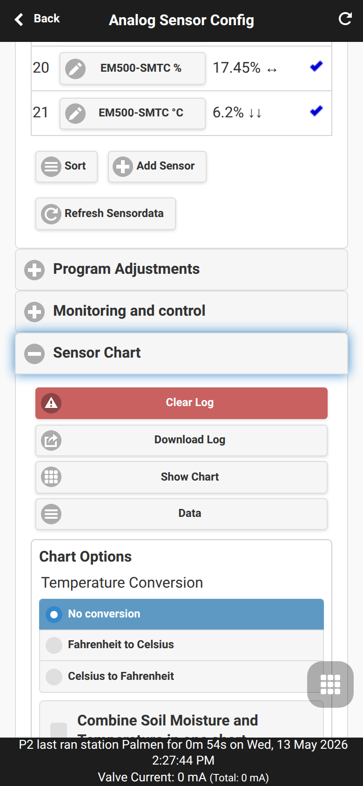
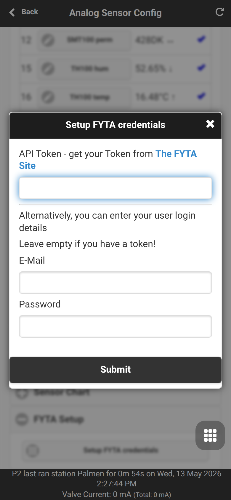
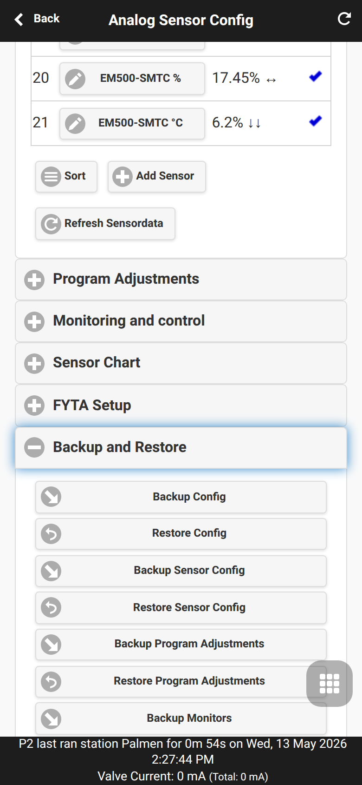

Analog Sensor Configuration
Analog Sensor Configuration is the OpenSprinklerPro UI area for defining sensor sources and using their values in irrigation automation. Open it from the footer menu with Analog Sensor Configuration.

Related pages: Sensor Automation and Monitors, FYTA Sensors, OpenSprinklerPro Extensions, API and platform addendum.
Sensor definitions
The first section defines the sensor list. Each row has a sensor number, name, current value and enable state. Add Sensor opens the editor for a new sensor; existing sensors are edited by tapping the sensor name.

The editor supports many sensor families, depending on platform and firmware build:
| Sensor family | Typical use |
|---|---|
| Analog extension board | Voltage or percentage values from analog soil/moisture sensors |
| Truebner / RS485 / Modbus | SMT50/SMT100/TH100 and generic Modbus RTU values |
| Zigbee | ESP32-C5 Zigbee sensors such as temperature, humidity or soil values |
| BLE | Bluetooth Low Energy sensors on ESP32 builds with BLE |
| MQTT | Subscribe to externally published sensor values |
| FYTA | Soil moisture and temperature from the FYTA cloud |
| Remote OpenSprinkler | Read a sensor value from another controller |
| Weather service | Temperature, humidity, precipitation, wind, ETo or radiation values |
| Group sensors | Min, max, average or sum over other sensors |
| Diagnostic sensors | Free memory, free storage or similar controller diagnostics |
Common fields include sensor number, name, group, type, unit/format, read interval, enabled state and whether the value should be logged or shown. Type-specific fields appear for radio, cloud, MQTT, Modbus and remote sensors.
Program adjustments
Program Adjustments let a sensor scale the watering duration of a program. Typical examples are reducing watering when soil moisture is high or increasing watering when temperature is high.


Adjustment types include LINEAR, DIGITAL_MIN, DIGITAL_MAX and DIGITAL_MINMAX. The current implementation details and formulas are documented in Sensor Automation and Monitors. MCP/API automation can use configure_adjustment; REST details are listed in the API and platform addendum.
Monitors and local alerts
Monitoring and Control creates threshold and logic rules from sensors. Monitors can produce local warnings, feed notification events and combine conditions such as “soil is dry” and “current time is morning”.


Monitor types include threshold checks, digital rain/soil sensor rules, logic combinations, time windows and remote monitor states. See Sensor Automation and Monitors for the functional model.
Sensor chart and data
Sensor Chart displays logged sensor values. Use it to check whether readings are plausible before using them for program adjustments or monitors. The UI can also download logs or open the logged data table.

FYTA setup
FYTA Setup stores a FYTA API token or login credentials and lets FYTA plant sensors be mapped into OpenSprinkler sensors. See FYTA Sensors for setup and troubleshooting details.


Backup and restore
Backup and Restore exports or restores sensor configuration, program adjustments and monitors separately from the general controller backup. Use this before large sensor changes or firmware tests.
